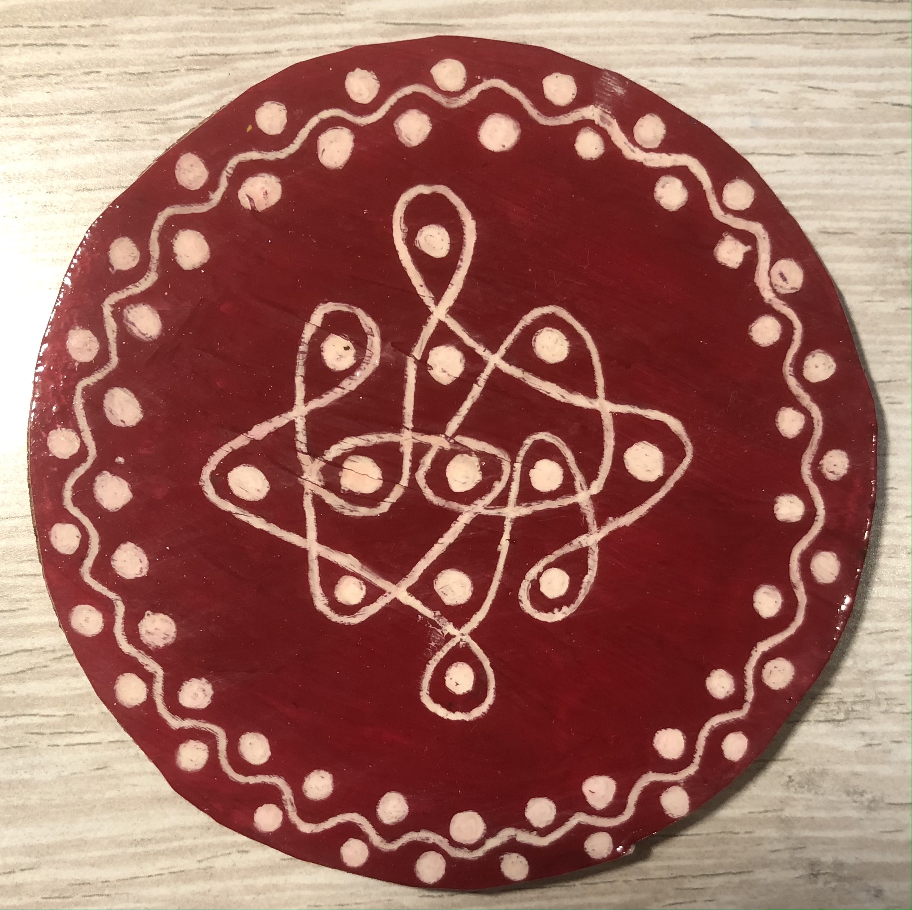
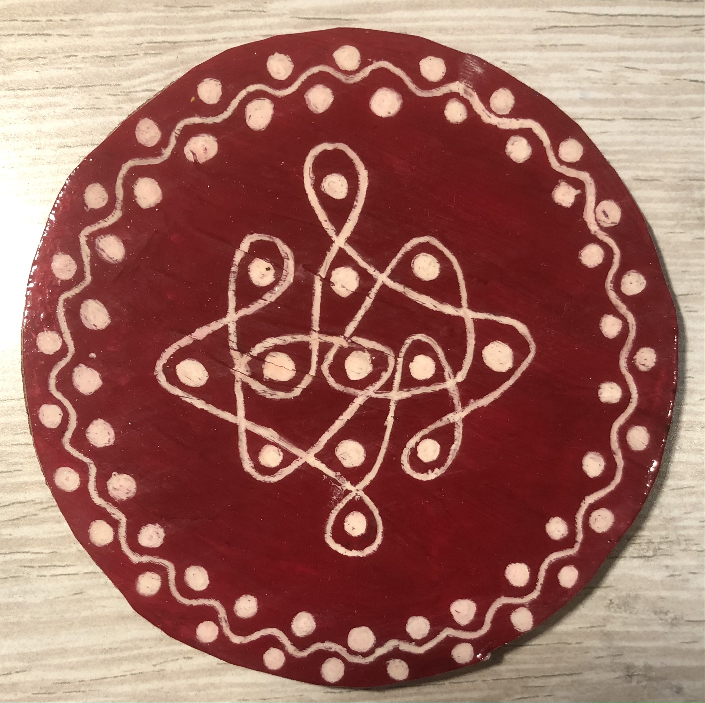

Hello, and welcome. My name is Prajna, I'm from India, and I'm 16 years old. I'm a person who really likes visual arts and crafts, and I have been doing that, like over the years now, and I feel really happy and proud of myself when I do it. And, I also get praised by a lot of people like my parents and siblings, my family, my friends and also some of my teachers, which motivates me to create more and more arts and crafts, which is what I like, and I also feel very appreciated. So today, as part of my web page, I will share about my interest in Visual Arts and Crafts, and I will also share some different art and craft ideas that you can also try!
This is an interesting idea, that you can try for fun, and by doing this, you can sometimes get a new learning experience from it. So, this is basically a type of craft activity, and as part of this you can make lots of different kinds of things out of rubber bands, that come in a variety of different colors, and you can make things like bracelets, rings, necklaces, keychains and you can also make lovely wall art and also phone, ipad and tablet cases. And above, are just pictures of some of my creations that I made before.
This is a very interesting idea, that you can try, and from doing this, you can also have fun, relax, unwind and also be free and open, at the same time. This is basically a type of art form which mostly consists of an intricate flower in a circle like structure, and once you have your basic design drawn out, you can fill it up with lots of different doodle designs/patterns of your choice such as tiny shapes, like circles, hearts, stars, diamonds and teardrops, you can do like wave, zigzag or petal patterns or you can also do like little flower or butterfly patterns. The options are literally endless.
This is an art form, from my culture, called Rangoli, and you can also do this as a little craft activity for fun, and you can also get a new learning experience, from doing this. This is basically like a floor decoration piece, that you can use for festivals, like we as indians do, or you can also just use this in general, if you want to add a pop of color. This activity consists of plain acrylic rangoli sets, that you can get in a variety of different pieces, colors and shapes, and this also consists of colorful decorative stones, mostly in the shapes of teardrops and circles, and some pearls, and also some coloured ball chains, stone chains and pearl chains, and you can decorate the rangolis however you want.
This is a really fun and interesting activity, and this can also be a great thing to do to pass the time. This is like a basic thing that you can do yourself if you know how to draw, or alternatively you can draw by looking at photos or other drawings, or you can also look at drawing tutorials on YouTube and then you can just copy your chosen idea, on what you want to draw, yourself on a piece of paper, and then you can color ir however you like.
.JPG) 

This is also another art form, from my culture, called Kolam, and this is a really interesting idea that you can also try, and actually, this is pretty simple to make. All you need for this is plain cork coaster bases, 300gsm watercolour paper (preferably), acrylic paints of different colors a white or a black gel pen, depending on your background color, and also some varnish, modpodge or whatever you want to use as a sealant. All you need to do for this is take a cork coaster base, and draw around your shape on 300gsm watercolour paper, and then cut out your shape. Then, take acrylic paints of different colors and then paint the base of your shape, with any colors of your choice. And then, once the paint has dried, take either a white or a black gel pen, and draw your chosen kolam on top. Then, glue it onto your cork coaster base, and then seal it with 4-5 layers of varnish, modpodge, or whatever type of sealant works for you.
This is also a very fun and interesting idea, that you can also try, and you will enjoy doing this for sure. So, this is basically an art form, which is a type of painting method in which the paints are made of pigments suspended in a water-based solution. Watercolor refers to both the medium and the resulting artwork. All you need for this is some watercolour paper, and you can use any kind of watercolour paper, but preferably 300gsm. You will need some watercolour paints, which you can get in both tubes and pans, and you can also get them as full color sets. And, you will also need some paint brushes, preferably the ones with the soft bristles. And with this, you can create lots of different paintings of whatever you want, like your favourite animals, favourite places, favourite things, objects and even self portraits.
This is a pretty unique idea, and it will engage you to try and you can also get a new learning experience, from doing this. The method is pretty much similar, to the kolam coasters that I mentioned earlier. So, all you need for this is cork coaster bases, some paint markers (prefereably) or you can use another other markers you have, you will need some cork coaster bases, and some 300 gsm watercolour paper and a black pen, prefereably a ball point pen, or a gel pen. The way I did this is by using pretty much the same method like with the kolam coasters which I mentioned about earlier
Some of these ideas can work as great gifts that you can make and send to someone like your friends and family, or you can just have fun and make these for yourself.
Home